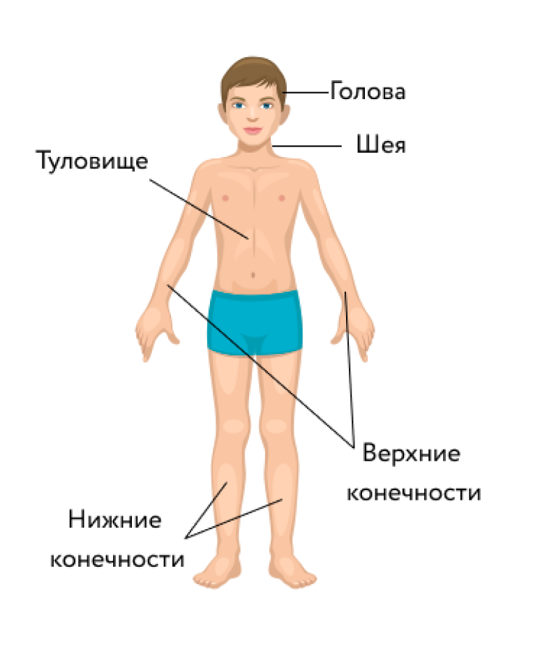
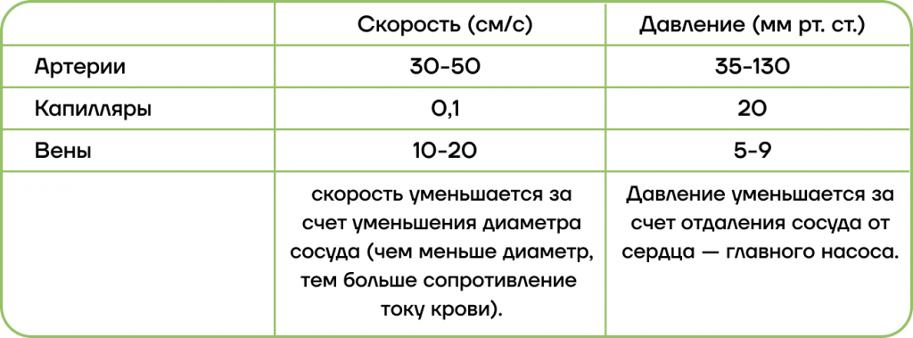
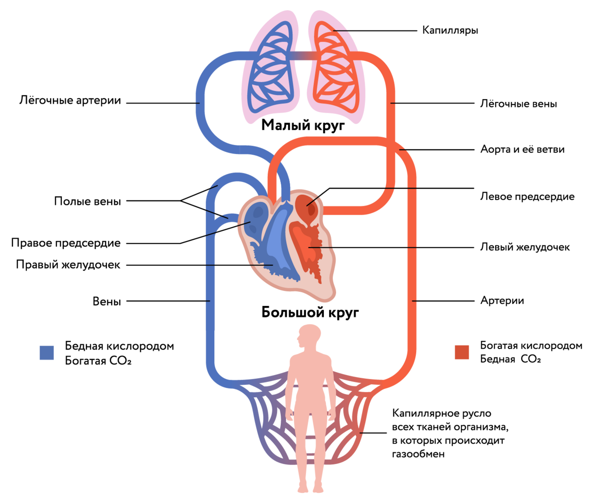
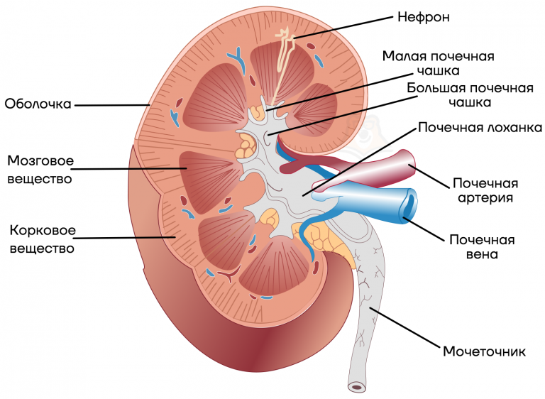
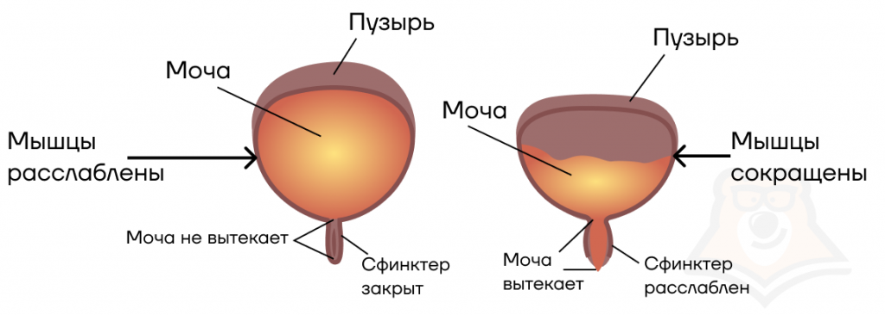
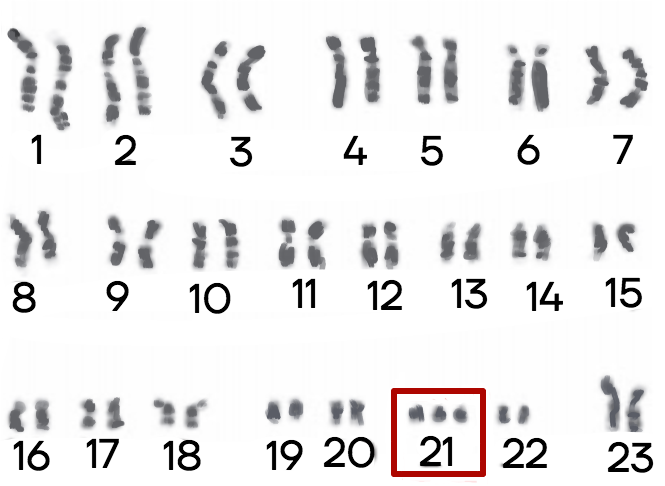
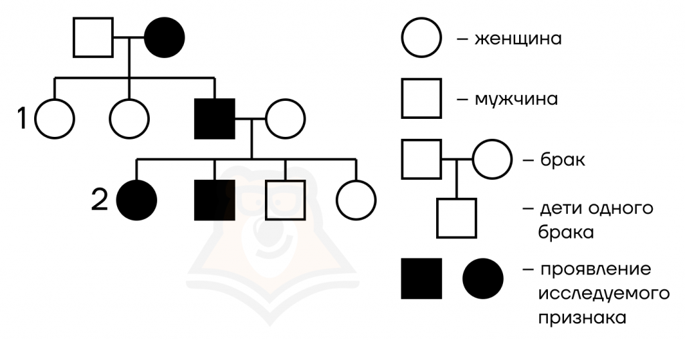
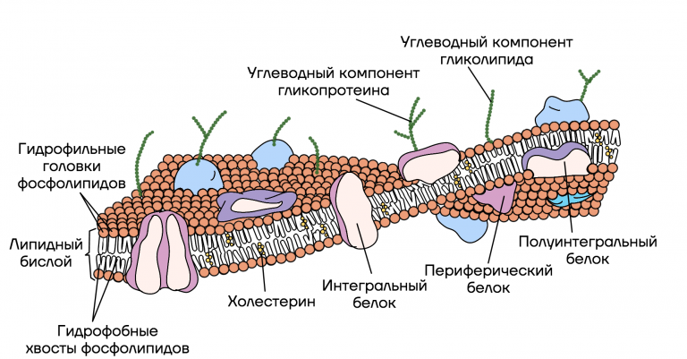
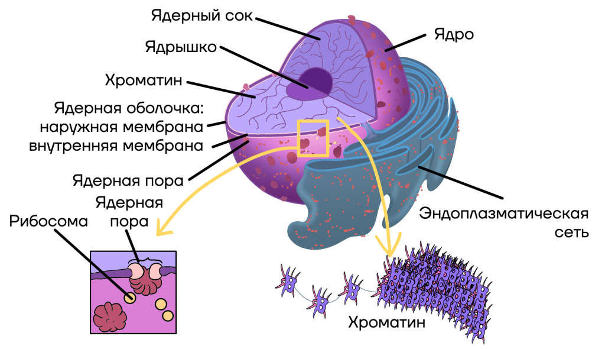

Строение тела человека изучает наука анатомия, а работу органов — физиология.
То, что мы видим снаружи, — это внешнее строение тела человека. В нём выделяют основные части: голову, шею, туловище, верхние конечности (руки) и нижние конечности (ноги).Вся поверхность тела покрыта кожей. Это самый большой орган нашего тела. Кожа защищает организм от повреждений и помогает сохранять постоянную температуру тела. Когда мы потеем, через кожу из организма выводятся ненужные вещества. А ещё кожа очень чувствительна. С её помощью мы получаем информацию об окружающем мире: ощупываем предметы, чувствуем холод или тепло.
Органы, связанные друг с другом и выполняющие общую задачу в организме, называют системой органов. Например, скелет и мышцы образуют опорно-двигательную систему. Они поддерживают наше тело, позволяют ему двигаться, а также служат защитой для внутренних органов.
Системы органов:опорно-двигательную систему,нервная система,пищеварительная система,дыхательная система,кровеносная система,выделительная система,половая система
Функции опорно-двигательного аппарата:
Опорная: является опорой всего тела; к костям прикрепляются мягкие ткани и органы;
Двигательная: система рычагов с подвижными соединениями, приводимых в движение мышцами;
Защитная: образует полости для жизненно важных органов — позвоночный канал для спинного мозга; черепная коробка — для головного мозга; грудная полость — для сердца и легких; тазовые кости — для защиты органов мочеполовой системы;
Минеральный обмен: кости являются депо для минеральных солей: фосфора, кальция, железа, меди; регулируют постоянство минерального состава внутренней среды организма;
Кроветворная (гемопоэтическая функция): из стволовых гемопоэтических клеток костного мозга образуются клетки крови и иммунной системы.
губчатое костное вещество образуется в местах наибольшего сжатия или растяжения;
развитие костной ткани зависит от деятельности присоединенных к данной кости мышц;
трубчатое и арочное строение кости обеспечивает наибольшую прочность при минимальных затратах костного материала;
внешняя форма кости зависит от давления на нее окружающих тканей и органов, в первую очередь мышц, форма кости меняется при уменьшении или увеличении давления;
изменение формы кости зависит от внешних сил
Длинные кости — кости с длинным трубчатым диафизом: составляют в основном скелет конечностей — бедренная, большая и малая берцовые, плечевая и кости предплечья.
Плоские кости — кости из тонкого слоя губчатого вещества, покрытого снаружи компактным веществом: лопатка, кости таза, кости черепа.
Короткие кости — кости из губчатого вещества, покрытого снаружи тонким слоем компактного вещества; имеют множество мелких костно-мозговых полостей: кости запястья, предплюсны.
Смешанные кости — сочетают элементы разных типов костей — коротких и плоских костей: позвонки, кости лицевой части черепа; короткие и трубчатые: кости фаланг пальцев.
Пневматические, или воздухоносные, кости -- кости, которые имеют внутри полость, выстланную слизистой оболочкой и заполненную воздухом, что облегчает вес кости, не уменьшая ее прочности: кости черепа.
Сесамовидные кости — кости, расположенные в толще сухожилий и обычно лежащие на поверхности других костей. Сесамовидные кости отмечаются в областях, где сухожилия перекидываются через суставы (например, в области запястья, коленного сустава, стопы). Они обеспечивают защиту сухожилий и удерживают сухожилия в некотором отдалении от центра сустава, увеличивая плечо силы.
1.Неподвижное соединение костей; повышает прочность соединения;
- образование шва: кости черепа;
- срастание костей: кости таза.
2.Полуподвижное соединение костей с помощью хрящей: баланс между подвижностью и защитой: соединение позвонков (защита спинного мозга), соединение ребер с грудиной (защита органов грудной клетки).
3.Подвижное соединение — сустав.
Позвоночник взрослого человека имеет 4 изгиба: 2 кифоза (вперед) и 2 лордоза (назад).Функция: амортизация.
Сводчатая стопа. Функция: амортизация.Чашевидный таз. Функция: опора внутренних органов брюшной полости.
Массивные кости нижних конечностей человека толще и прочнее костей рук, так как ноги несут на себе всю тяжесть тела.
Нервная система — иерархически организованная нервная ткань, пронизывающая весь организм и связывающая его в единое целое.
Регуляция жизнедеятельности тканей, органов и их систем;
Объединение (интеграция) организма в единое целое;
Осуществление взаимосвязи организма с внешней средой и приспособления его к меняющимся условиям среды;
Определение психической деятельности человека как основы его социального существования.
В отличие от гуморальной регуляции процессов жизнедеятельности, осуществляемой железами внутренней секреции, нервная система обеспечивает быструю передачу информации (возбуждения) вполне определенным клеткам, тканям, органам.
Пищеварительная система — система внутренних органов, выполняющих функцию механической и химической обработки пищи.
моторная: механическое измельчение и перемешивание пищи; продвижение пищевого комка по пищеварительному тракту;
секреторная: выделение ферментов для химической обработки пищи;
всасывательная: всасывание питательных веществ ворсинками тонкого кишечника и поступление питательных веществ в кровь и лимфу.
выделительная: выведение из пищеварительного тракта непереваренных веществ и некоторых продуктов метаболизма.
Пищеварительная система включает пищеварительный канал и пищеварительные железы.
Пищеварительный канал:
ротовая полость;
глотка;
пищевод;
желудок;
тонкая кишка;
толстая кишка
Пищеварительные железы:
слюнные железы;
желудочные железы;
кишечные железы;
поджелудочная железа;
печень
Дыхательная система человека — совокупность органов и тканей, обеспечивающих в организме человека обмен газов между кровью и внешней средой.
поступление в организм кислорода;
выведение из организма углекислого газа;
выведение из организма газообразных продуктов метаболизма;
терморегуляция;
синтетическая: в тканях лёгких синтезируются некоторые биологически активные вещества: гепарин, липиды и др.;
кроветворная: в лёгких созревают тучные клетки и базофилы;
депонирующая: капилляры лёгких могут накапливать большое количество крови;
всасывательная: с поверхности лёгких легко всасываются эфир, хлороформ, никотин и многие другие вещества.
Полость разделена решётчатой костью на две половины. Костные пластинки разделяют обе половины на узкие, сообщающиеся между собой ходы.В полость носа открываются пазухи воздухоносных костей: гайморова, лобная и др. Эти пазухи называются придаточными пазухами носа. Они выстланы тонкой слизистой оболочкой, содержащей небольшое количество слизистых желез. Все эти перегородки и раковины, а также многочисленные придаточные полости черепных костей резко увеличивают объём и поверхность стенок носовой полости.
Все процессы жизнедеятельности протекают при обязательном участии кислорода, т. е. являются аэробными. Особенно чувствительной к кислородной недостаточности является ЦНС, и прежде всего корковые нейроны, которые в бескислородных условиях погибают раньше других. Как известно, период клинической смерти не должен превышать пяти минут. В противном случае в нейронах коры головного мозга развиваются необратимые процессы.
Дыхание — физиологический процесс обмена газов в лёгких и тканях.
Весь процесс дыхания можно разделить на три основных этапа:
лёгочное (внешнее) дыхание: газообмен в капиллярах лёгочных пузырьков;
транспорт газов кровью;
клеточное (тканевое) дыхание: газообмен в клетках (ферментативное окисление питательных веществ в митохондриях).
Эритроциты содержат гемоглобин, сложный железосодержащий белок. Этот белок способен присоединять к себе кислород и углекислый газ. Проходя по капиллярам лёгких, гемоглобин присоединяет к себе 4 атома кислорода, превращаясь в оксигемоглобин. Эритроциты транспортируют кислород из лёгких в ткани организма. В тканях происходит освобождение кислорода (оксигемоглобин превращается в гемоглобин) и присоединение углекислого газа (гемоглобин превращается в карбогемоглобин). Далее эритроциты транспортируют углекислый газ к лёгким для удаления из организма.
Дыхание регулируется нервными и гуморальными механизмами, которые сводятся к обеспечению ритмической деятельности дыхательной системы (вдох, выдох) и адаптационных дыхательных рефлексов, то есть изменению частоты и глубины дыхательных движений, имеющих место при изменяющихся условиях внешней среды или внутренней среды организма.Ведущим дыхательным центром, как было установлено Н. А. Миславским в 1885 году, является дыхательный центр, расположенный в области продолговатого мозга.Дыхательные центры обнаружены в области гипоталамуса. Они принимают участие в организации более сложных адаптационных дыхательных рефлексов, необходимых при изменении условий существования организма. Кроме того, дыхательные центры размещаются и в коре головного мозга, осуществляя высшие формы адаптационных процессов. Наличие дыхательных центров в коре головного мозга доказывается образованием дыхательных условных рефлексов, изменениями частоты и глубины дыхательных движений, имеющих место при различных эмоциональных состояниях, а также произвольными изменениями дыхания.Вегетатвная нервная система иннервирует стенки бронхов. Их гладкая мускулатура снабжена центробежными волокнами блуждающих и симпатических нервов. Блуждающие нервы вызывают сокращение бронхиальной мускулатуры и сужение бронхов, а симпатические нервы расслабляют бронхиальную мускулатуру и расширяют бронхи.Гуморальная регуляция: вдох осуществляется рефлекторно в ответ на повышение концентрацию углекислого газа в крови.
Сердце — четырехкамерный мышечный орган, расположенный в перикарде или околосердечной сумке — оболочке из соединительной ткани.
Сердце — это трехслойный орган, в его строении выделяют:
эпикард — соединительная ткань;
миокард — поперечно-полосатая сердечная мышечная ткань;
эндокард — внутренний слой сердца, в составе которого есть эпителиальная ткань.
Сердце — это четырехкамерный орган, в его строении выделяют:
ПП — правое предсердие;
ЛП — левое предсердие;
ПЖ — правый желудочек;
ЛЖ — левый желудочек.
В правой половине сердца — венозная кровь, она насыщена углекислым газом.
В левой половине сердца — артериальная кровь, она насыщена кислородом.
Сокращение (систола) предсердий:
длится 0,1 сек;
створчатые клапаны открыты;
полулунные — закрыты;
кровь выбрасывается в желудочки.
Сокращение (систола) желудочков:
длится 0,3 сек;
полулунные клапаны открыты;
створчатые — закрыты;
предсердия расслабляются;
кровь выбрасывается в аорту и легочный ствол.
Диастола — одновременное расслабление предсердий и желудочков:
длится 0,4 сек;
предсердия и желудочки расслаблены;
полулунные клапаны закрываются;
сердце заполняется кровью.
Таким образом, предсердия работают всего ⅛ часть времени, а ⅞ они отдыхают. Желудочки работают чуть больше — ⅜ всего времени, но отдыхают они все равно много — ⅝.
В кровеносной системе выделяют три основных вида сосудов:
Артерии — сосуды, несущие кровь от сердца к тканям и органам. Самая крупная артерия в организме человека — аорта. Это главная улица нашего организма — от нее отходят артерии (переулки) поменьше, а от них отходят тропинки — артериолы и капилляры.
Вены — сосуды, несущие кровь к сердцу от тканей и органов. Это дорожки, по которым наш курьер возвращается от клиента. В просвете вен нижних конечностей имеются полулунные клапаны, которые препятствуют обратному току крови. Ведь логично, что вниз (от сердца к конечностям) жидкость (в нашем случае кровь) движется легче, чем обратно вверх против силы гравитации. Поэтому в других сосудах таких клапанов нет.
Капилляры — микроскопические сосуды. Их стенки состоят из одного слоя эпителиальных клеток. Именно в капиллярах кровь выполняет свои основные функции.
Малый круг кровообращения начинается в правом желудочке.
Последовательность движения крови: правый желудочек – легочный ствол – две легочные артерии – капилляры – лёгкие (газообмен, кровь становится артериальной) – венулы – легочные вены – левое предсердие.
Сосуды малого круга кровообращения состоят из системы легочной артерии и системы легочных вен.Легочная артерия является одним из самых крупных сосудов человека. Ее ствол имеет длину около 6 см, а диаметр — 3 см. Легочная артерия с венозной кровью выходит из правого желудочка и делится на две ветви: правую, идущую в правое легкое, и левую, идущую в левое легкое.От места разветвления легочной артерии к дуге аорты отходит боталлов проток — заросший сосуд, соединявший в эмбриональный период легочную артерию с аортой. В легких правая ветвь делится на три, а левая — на две ветви соответственно числу долей того и другого легкого.Ветви легочной артерии идут параллельно бронхам до самых легочных пузырьков (альвеол), и образуют на их стенках густую капиллярную сеть. Здесь происходит обмен газами между кровью и альвеолярным воздухом.Затем капилляры соединяются в венулы, затем в вены, которые сливаются в четыре легочные вены, по две в каждом легком. Из легких легочные вены несут артериальную кровь в левое предсердие.Клапаны в легочных венах отсутствуют.

Последовательность движения крови: левый желудочек – аорта – артерии – артериолы – капилляры (газообмен с тканями, обмен питательных веществ на продукты метаболизма, кровь становится венозной) – венулы – вены – верхняя и нижняя полые вены – правое предсердие
На нижней конечности также имеется обширная сеть поверхностных вен. При застое крови поверхностные вены могут сильно расширяться (варикозное расширение), особенно у женщин во время беременности, а также у лиц некоторых профессий, связанных с длительным стоянием.
Верхняя и нижняя полые вены, впадая в правое предсердие, замыкают большой круг кровообращения тела человека.
Выделительная система выполняет следующие функции:
Выделительную — выводит избыток воды, солей и продукты метаболизма из организма.
Защитную — выводит токсичные соединения, образовавшиеся в процессе обмена веществ.
Участвует в поддержании гомеостаза, то есть постоянства внутренней среды — следит за тем, чтобы концентрация веществ в организме была стабильной.
Гуморальную — выделяет фермент, регулирующий артериальное давление (ренин).
Почки — парные органы бобовидной формы, расположенные по бокам от позвоночника на уровне поясницы.
Мочеточники — это полые трубки, по которым моча движется от почек к мочевому пузырю.
Мочевой пузырь — это резервуар для хранения мочи. Его объем составляет 500—700 мл — как баночка соленых огурчиков из магазина. Он имеет три слоя: слизистую оболочку, мышечный слой из 3 слоев гладких мышц и соединительную ткань. При сокращении мышц стенок мочевого пузыря и расслаблении мышц сфинктеров — клапанов, регулирующих мочеиспускание, происходит выделение мочи.
Генетика — наука о закономерностях наследственности и изменчивости.
Гены — это участки ДНК, в них хранится информация о признаке или свойстве, которым обладает организм.
Суть метода: анализ характера наследования признаков при скрещивании двух организмов одного вида, отличающихся по одному или нескольким признакам.
Организмы, одинаковые (гомозиготные) по одному или нескольким признакам и при скрещивании не дающие в потомстве проявление других альтернативных признаков, называются чистыми линиями.
Организмы, полученные при скрещивании двух чистых линий, называют гибридами.
Суть метода: изучается структура, кариотип (набор хромосом) и форма хромосом при использовании микроскопа.
Кариотип синдрома Дауна
В генетике человека вместо классического гибридологического анализа применяют генеалогический метод.
Суть метода: проанализировать характер наследования в ряду поколений.
Для анализа требуется построить генеалогическое древо или, проще, родословную.
Пример родословной:
Суть метода: применяется для получения данных о том, как окружающая среда может повлиять на проявление генотипа и фенотипа у близнецов.
Близнецы бывают однояйцевыми (близнецы) и разнояйцевыми (двойняшки). Однояйцевые близнецы развиваются из одной яйцеклетки, оплодотворенной одним сперматозоидом, поэтому их генотип одинаков. Разнояйцевые близнецы развиваются из двух и более яйцеклеток, оплодотворенных разными сперматозоидами, поэтому их генотипы различаются так же, как у родных братьев и сестер.
Суть метода: определить частоту встречаемости патологических генов в популяции.
Суть метода: определить последовательность нуклеотидов в ДНК.
Суть метода: это имитация естественной репликации (удвоения) ДНК, результат которого — обнаружение специфичной молекулы ДНК среди многих других молекул.
В общем плане клетка состоит из двух основных частей:
Плазмалемма (или плазматическая мембрана) — это «забор» клетки — он обосабливает ее от других клеток организма.
Цитоплазма — это вся внутренняя территория нашего городка.
В состав цитоплазмы клетки входят три основные части:
цитозоль,
цитоскелет,
органоиды.
Плазмолемма — это наружная мембрана любой живой клетки.
Для нормального существования, клетка должна поглощать какие-то вещества из внешней среды и выделять продукты обмена. Поэтому клетка, как любой населенный пункт, постоянно осуществляет транспорт: какие-то вещества отправляет на экспорт, а какие-то поглощает.
Транспорт веществ бывает двух типов:
пассивный — происходящий без затрат энергии;
активный — протекающий с затратой энергии.
Функции ядра:
сохранение генетической информации,
ее реализация и передача.
Генетическая информация — это своеобразная «документация» о том, в каком количестве, когда и какими в клетке должны синтезироваться белки. Она содержится в ядре клеток в виде молекул ДНК.
Ядро — очень важная структура клетки. Именно в нем содержится информация о том, какой именно должна быть клетка, поэтому он должен быть надежно защищен. Для этого ядро отделяют от цитоплазмы 2 мембраны. Тем не менее ядро должно быть проницаемо, чтобы наследственная информация в виде своеобразной инструкции выходила из него и перемещалась к рибосомам — заводам по производству белка. Для этого в ядерных мембранах есть поры.